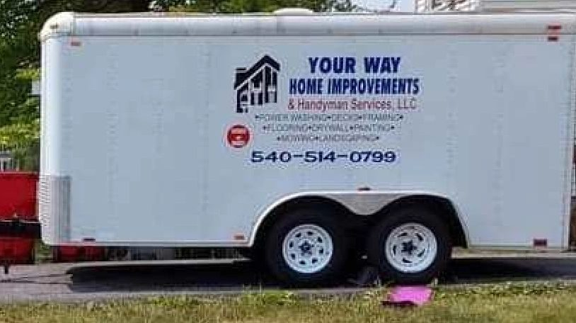
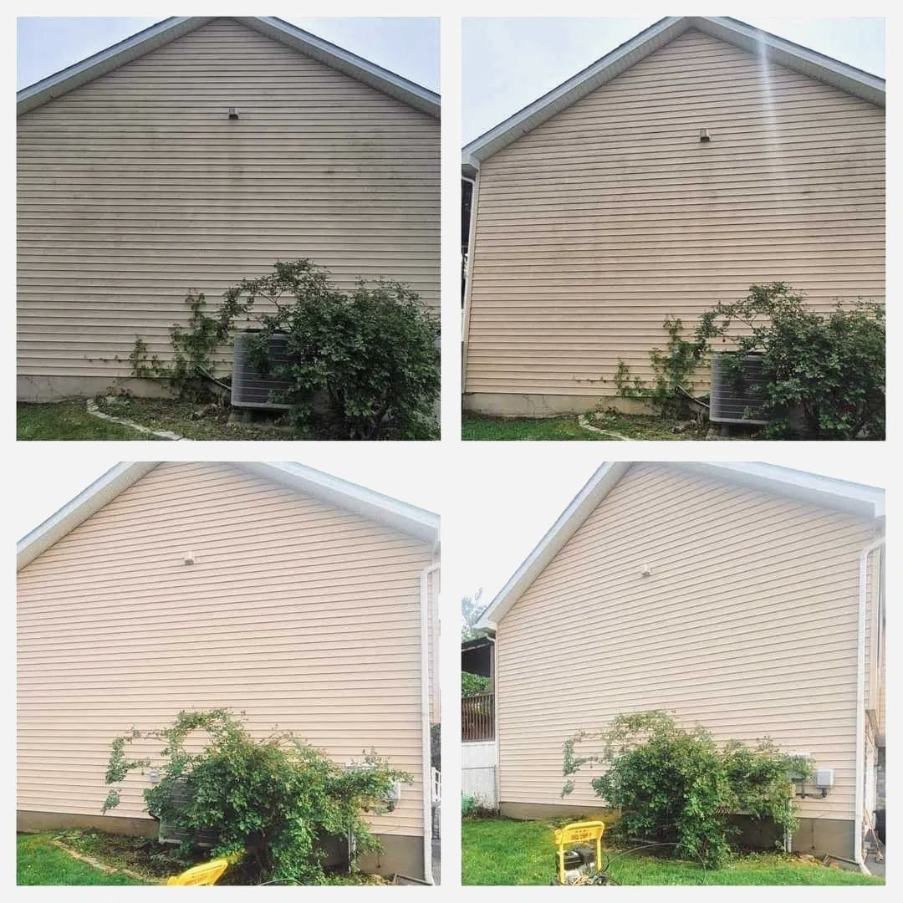
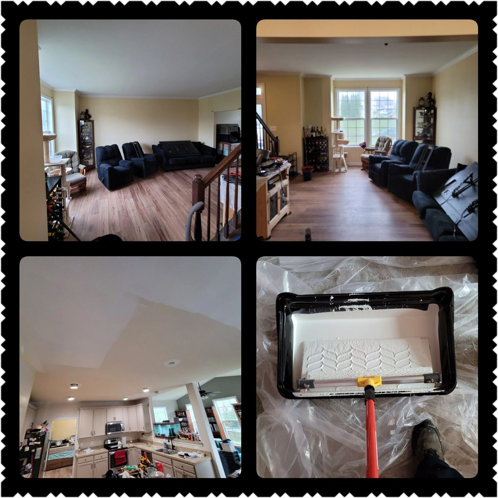
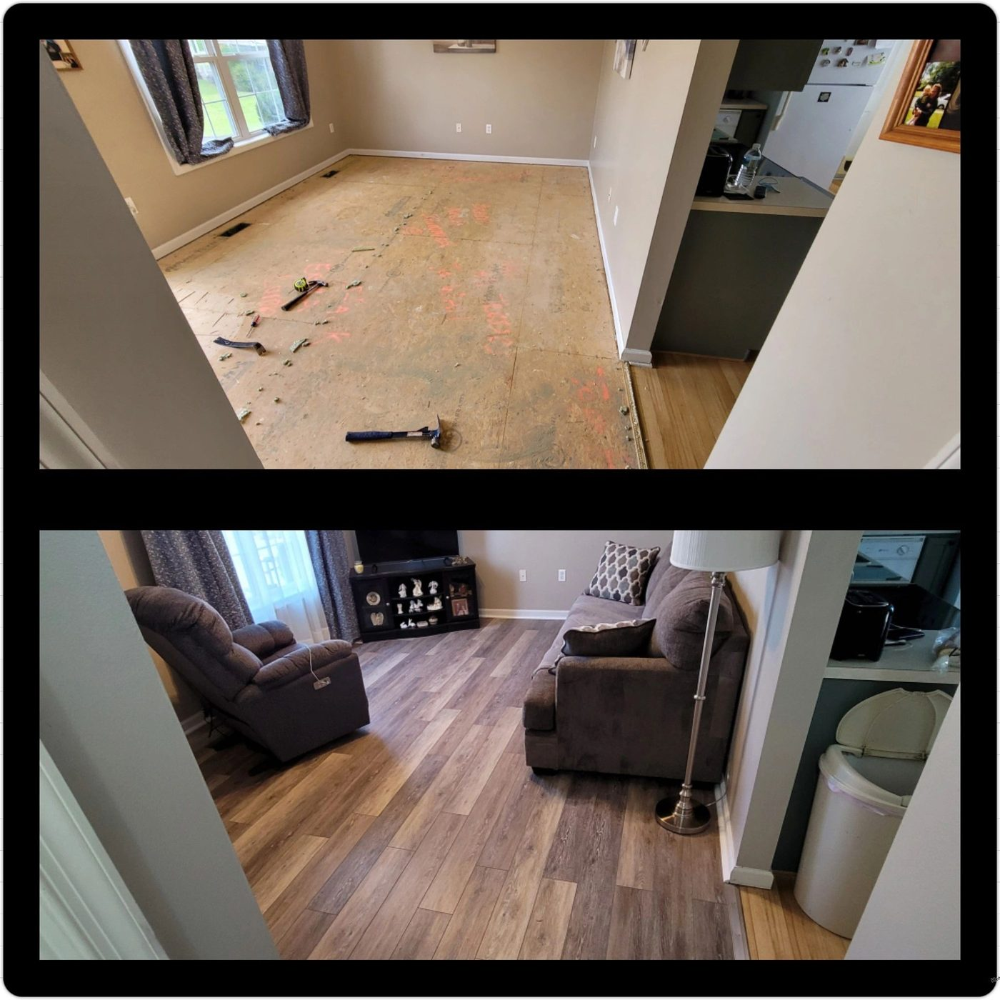
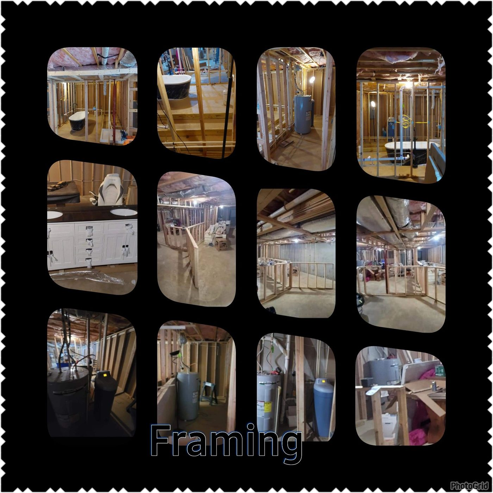
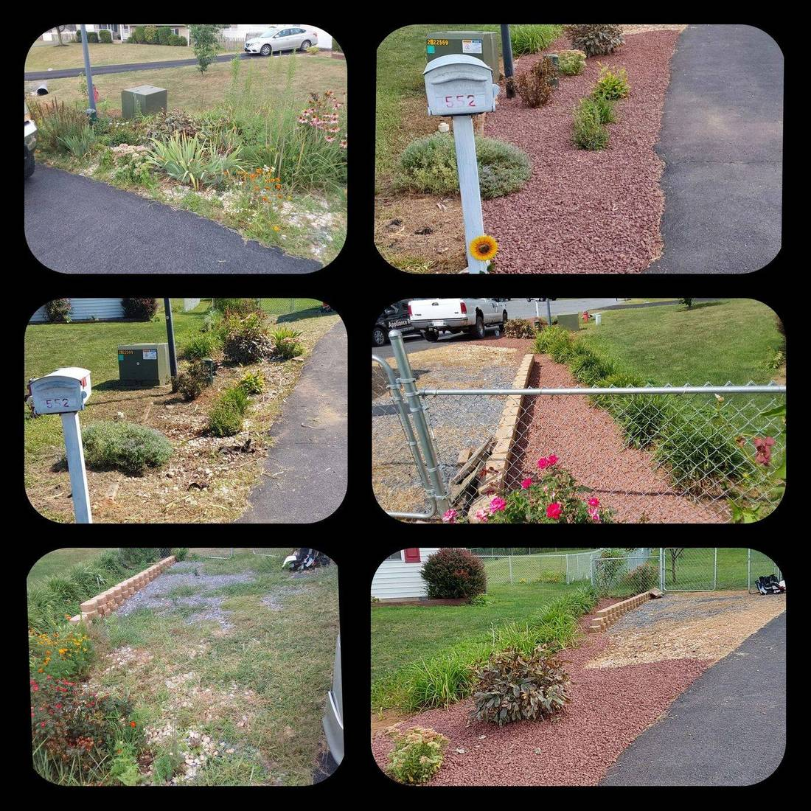

General maintenance
Fixtures, smoke detectors, doors and locks, backed-up pipes.
Martinsburg, WV · Owner Jason L. Smith
Fast and reliable work for homes and small jobs in Berkeley and Frederick counties and surrounding areas. We stay in constant communication with our customers until the job is done.
Commercial & residential. Licensed & insured — as printed on their business card.
Fixtures, smoke detectors, doors and locks, backed-up pipes.
Installation and assembly.
Landscaping and gutter cleaning. Decking, siding and gutters.
Framing and drywall repair.
Interior and exterior painting.
Siding, deck, and driveway.
The live galleries show empty slots. The photos were still on their GoDaddy CDN. These are theirs, not stock.






We stay in constant communication with our customers until the job is done.
The card they publish also lists flooring, framing, doors and windows, decks, drywall, interior & exterior painting, trim, and more.
Monday–Friday 6:00am till 5:00pm. Available 24/7 for emergency services.